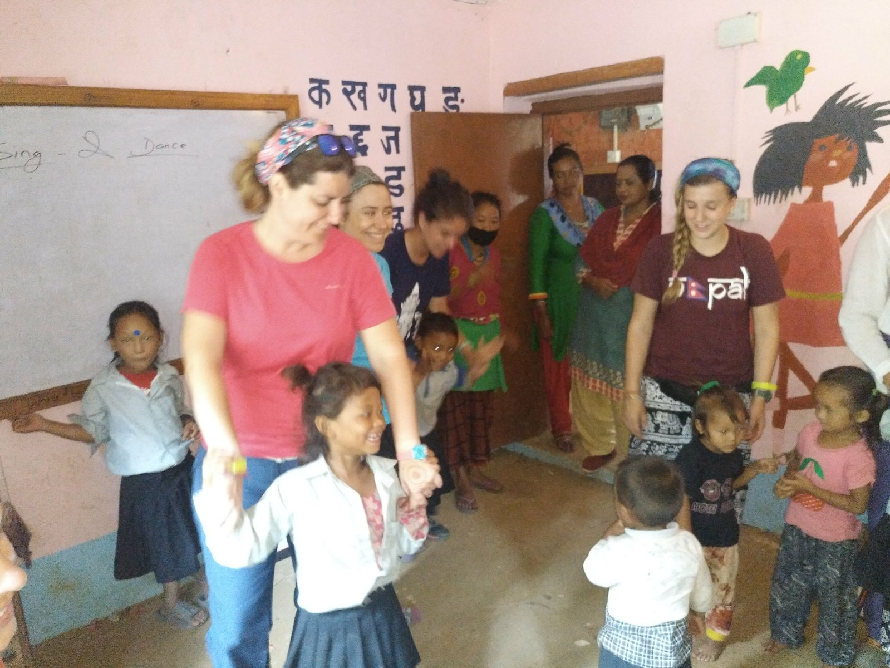
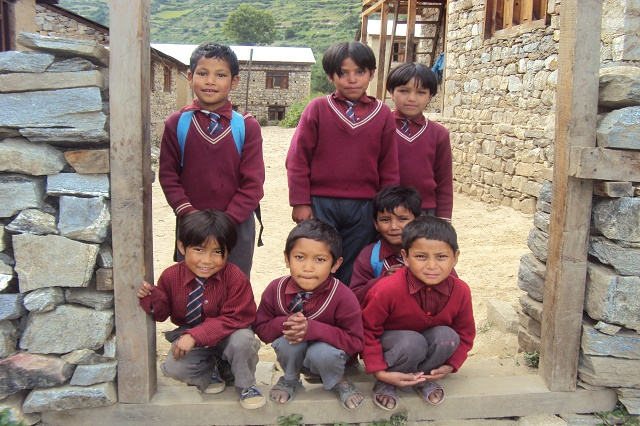

Our International Volunteer Program offers 2 to 6 weeks of cultural, language and educational immersion with local communities in Nepal.
READI has hosted volunteers from around the world. They join our community projects, work alongside local people every day, and stay with host families to learn through cultural exchange.
The program follows a global service-learning approach. Community service comes first, homestays are recommended, and each project has a clear theme. For many young people it becomes a once-in-a-lifetime experience that shapes how they lead and serve.
Work with the village primary school:
Help READI's community skills work through technical training, communication and computer education.
Volunteer placements are also organized in environment, health, engineering and other relevant areas.

Changunarayan, a hilltop village above the Kathmandu Valley, near the UNESCO-listed temple.
Bhaktapur · with Maresía ONG
Simikot, Humla: high in Nepal's far west, home of the READI Children's Home.
Humla · Karnali ProvinceWe organize volunteer trips for individuals and organizations abroad. In summer we run a 21-day group Micro-Project Program with AIPC Pandora (Madrid, Spain), and we work with other individuals and organizations in Spain, the US, Canada and the UK.
Email us with your dates, interests and skills.
We match you with a school or community project.
Meet your host family and the local team.
2 to 6 weeks of community work and immersion.
Fees, visas and what's included still need to be confirmed To confirm
Whether you're an individual or an organization, we'd love to hear from you.
General enquiries
info@readi.org.np
Head of volunteer program, Mr. Rakesh Shahi
rakeshshahi13@gmail.com